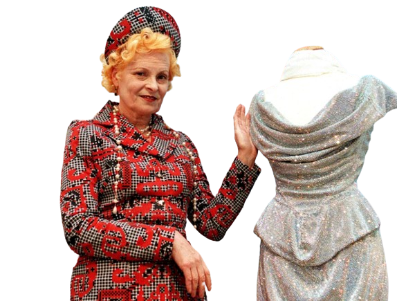
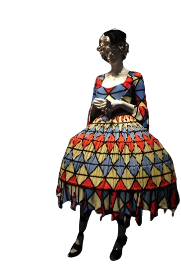

Vivienne Westwood
Vivienne Westwood, a fashion visionary, remains in the public conscious in today's ever
evolving and controversial industry, and even after her passing. Her daring designs were a fusion of art, culture, and eco-consciousness, which remains relevant.
She's noted for reintroducing corsets, tartan, and eclectic patterns, which she curated into her signature
aesthetic.
There's been a notable resurgence of Westwood's style, with her old designs seen at the Met Gala, and corsets being commonly incorporated into outfits, and corset-style boning added to mass-produced dresses.
This is in part due to the mainstream reemergence of period dramas such as Bridgerton, and trends inspired by the similarly vibrant outfits.
Vivienne Westwood's mark on fashion remains an inspiration to push boundaries and have fun with what you do, which is why I see her as a true icon.